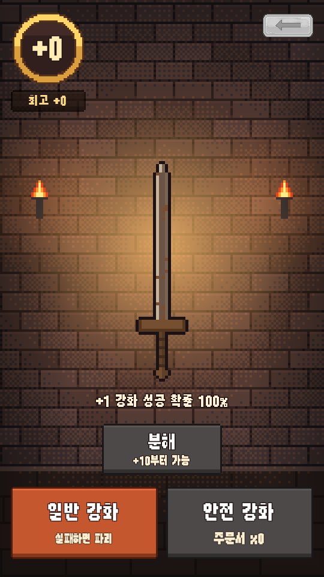
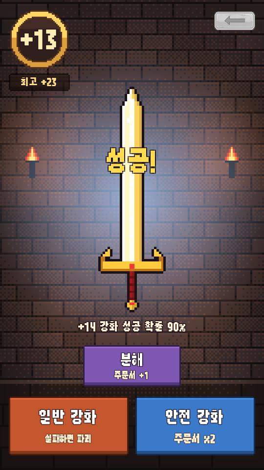
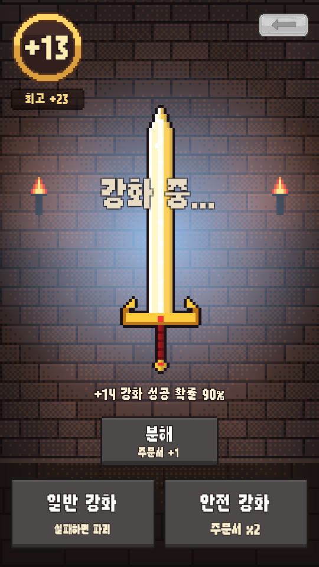
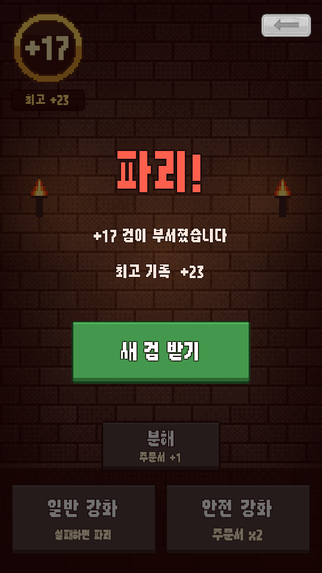
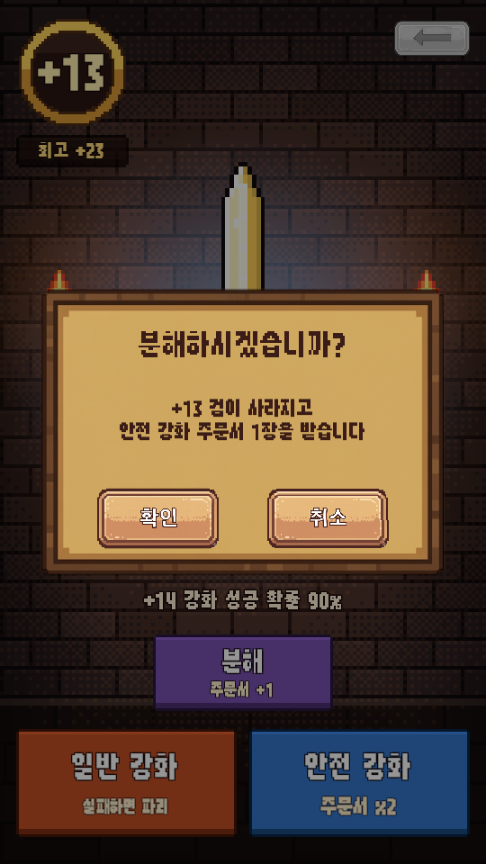
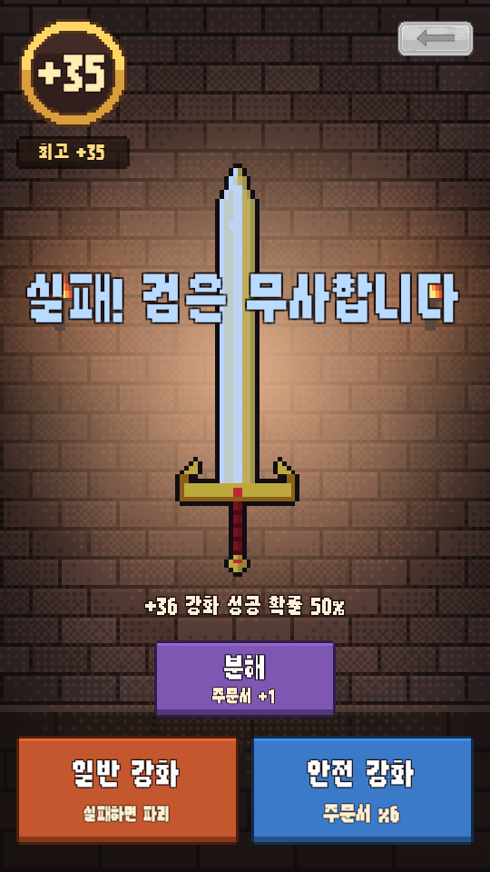
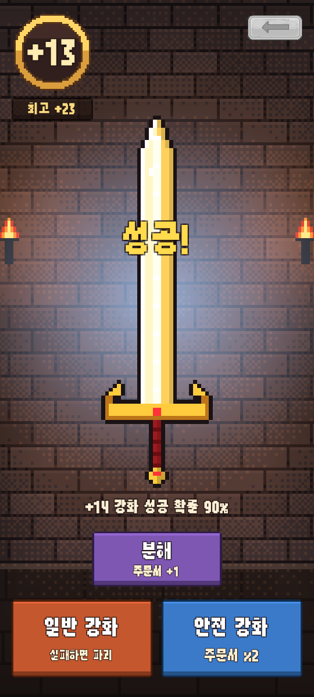
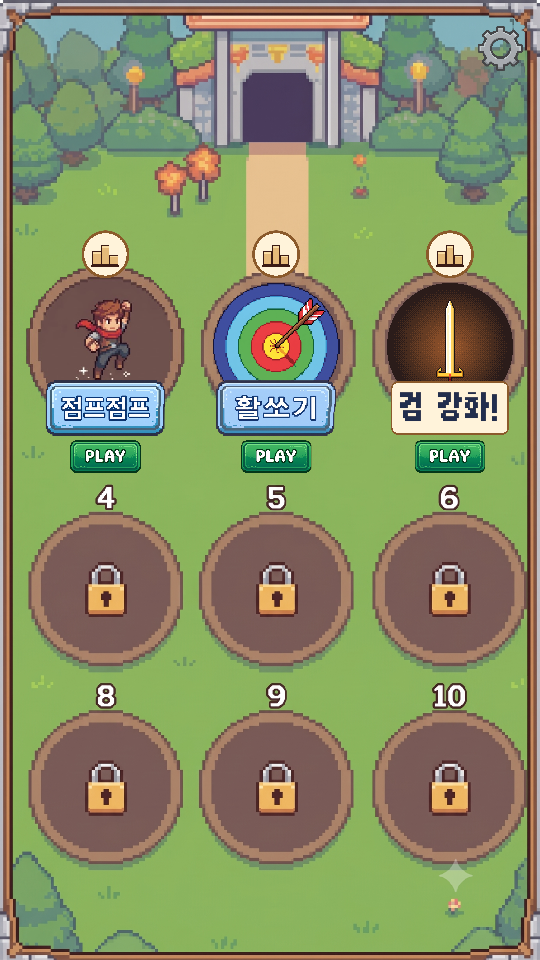

<title>검 강화 추가 보고서</title>
<meta charset="utf-8">
<style>
  :root{
    --bg:#f7f6f3; --card:#fff; --ink:#1c1b19; --muted:#6b6862;
    --line:#e3e0da; --accent:#c2410c; --ok:#15803d; --warn:#b45309;
  }
  @media (prefers-color-scheme:dark){:root:not([data-theme="light"]){
    --bg:#16151a; --card:#1f1e24; --ink:#eceaf0; --muted:#a3a0ab;
    --line:#33313b; --accent:#fb923c; --ok:#4ade80; --warn:#fbbf24;
  }}
  :root[data-theme="dark"]{
    --bg:#16151a; --card:#1f1e24; --ink:#eceaf0; --muted:#a3a0ab;
    --line:#33313b; --accent:#fb923c; --ok:#4ade80; --warn:#fbbf24;
  }
  body{background:var(--bg);color:var(--ink);font:16px/1.65 "Malgun Gothic","Segoe UI",system-ui,sans-serif;
       margin:0;padding:40px 20px 80px}
  main{max-width:880px;margin:0 auto}
  h1{font-size:28px;line-height:1.3;margin:0 0 6px;letter-spacing:-.02em}
  .sub{color:var(--muted);margin:0 0 36px;font-size:14px}
  h2{font-size:19px;margin:44px 0 14px;padding-bottom:8px;border-bottom:2px solid var(--line)}
  h3{font-size:15px;margin:26px 0 8px;color:var(--accent)}
  section{background:var(--card);border:1px solid var(--line);border-radius:12px;padding:4px 24px 24px;margin-bottom:8px}
  .tw{overflow-x:auto;margin:14px 0}
  table{border-collapse:collapse;width:100%;font-size:14px;min-width:460px}
  th,td{padding:7px 10px;text-align:left;border-bottom:1px solid var(--line);vertical-align:top}
  th{font-weight:600;color:var(--muted);font-size:12.5px;text-transform:uppercase;letter-spacing:.04em}
  tr:last-child td{border-bottom:none}
  code{background:var(--bg);border:1px solid var(--line);border-radius:4px;padding:1px 5px;font-size:13px;
       font-family:Consolas,"Cascadia Mono",monospace}
  ul{padding-left:20px} li{margin:6px 0}
  ol{padding-left:22px} ol li{margin:8px 0}
  .tag{display:inline-block;font-size:12px;padding:2px 9px;border-radius:99px;border:1px solid currentColor;
       font-weight:600;vertical-align:middle;white-space:nowrap}
  .ok{color:var(--ok)} .warn{color:var(--warn)}
  .note{border-left:3px solid var(--warn);background:var(--bg);padding:12px 16px;border-radius:0 8px 8px 0;margin:16px 0}
  .note p{margin:6px 0}
  .lead{font-size:17px}
  figure{margin:0}
  .shots{display:flex;gap:14px;flex-wrap:wrap;margin:18px 0}
  .shots figure{flex:1 1 200px;max-width:250px}
  .shots img{width:100%;display:block;border:1px solid var(--line);border-radius:8px}
  .shots figcaption{font-size:12.5px;color:var(--muted);margin-top:8px;text-align:center;line-height:1.5}
</style>

<main>
<h1>미니게임 3번 &ldquo;검 강화!&rdquo;</h1>
<p class="sub">심심할 때 하는 게임 &middot; 2026-09-11 늦은 밤 &middot; <code>@기획서_게임_03.pdf</code> + <code>@Enchant_Sword.csv</code> 로 추가</p>

<section>
<h2>한 줄 요약</h2>
<p class="lead"><strong>로비 3번 칸에 &ldquo;검 강화!&rdquo; 가 열렸습니다.</strong> 기획서의 화면 · 버튼 세 개와 표 51줄을 그대로 옮겼고,
확률은 <strong>표 그대로 나오는지 수천 번씩 눌러서 확인</strong>했습니다.
<strong>그림은 아직 임시(코드가 그린 픽셀아트)</strong>입니다 — 검 6장 · 로비 아이콘 · 배경을 넣어 주시면 코드 수정 없이 바뀝니다.</p>
<p>기획서만으로 정할 수 없던 것 <strong>12가지를 제가 정했습니다</strong>(아래 3절). 특히 <strong>①~⑤</strong>는 한 번 봐 주세요.</p>
</section>

<section>
<h2>1. 화면</h2>
<div class="shots">
<figure><figcaption>처음 들어왔을 때 (+0).<br>분해 · 안전 강화는 꺼져 있음</figcaption></figure>
<figure><figcaption>+12 &rarr; +13 성공 직후.<br>검 그림이 바뀌고 번쩍 + &ldquo;성공!&rdquo;</figcaption></figure>
<figure><figcaption>강화 중 (0.6초).<br>검이 떨리고 버튼이 잠김</figcaption></figure>
<figure><figcaption>일반 강화 실패 = 파괴.<br>[새 검 받기] 는 1.4초 뒤에 나옴</figcaption></figure>
<figure><figcaption>[분해] 를 누르면 한 번 묻습니다</figcaption></figure>
<figure><figcaption>+35 에서 안전 강화 실패.<br>검은 그대로, 주문서만 1장 씀</figcaption></figure>
<figure><figcaption>세로로 긴 폰(20:9).<br>검이 더 크게 나옵니다</figcaption></figure>
<figure><figcaption>로비 3번 칸.<br>이름표 그림이 없어 글자로 나옴</figcaption></figure>
</div>
<p>기획서 자리 그대로입니다 — <strong>왼쪽 위</strong> 동그라미 안 강화 수치(그 아래 최고 기록) / <strong>오른쪽 위</strong> 로비로 나가기 /
<strong>가운데</strong> 검 / <strong>아래</strong> [일반 강화] &middot; [분해] &middot; [안전 강화 x주문서 수]. 글자는 전부 <code>strings.csv</code> 의 <code>enchant.*</code> 줄에서 옵니다.</p>
</section>

<section>
<h2>2. 규칙 &mdash; 표가 게임에서 어떻게 쓰이나</h2>
<div class="tw"><table>
<tr><th>버튼</th><th>하는 일</th><th>실패하면</th></tr>
<tr><td><strong>일반 강화</strong></td><td>표의 확률로 +1</td><td><strong>검 파괴 &rarr; +0 새 검</strong> (주문서는 그대로)</td></tr>
<tr><td><strong>안전 강화</strong></td><td>주문서 1장을 쓰고 같은 확률로 +1</td><td>검은 그대로 (주문서만 사라짐)</td></tr>
<tr><td><strong>분해</strong></td><td>표의 <code>Melt</code> 가 1 이상인 수치(지금은 +10 부터)에서만 켜짐. 검을 +0 으로 돌리고 주문서 <code>Melt</code> 장</td><td>&mdash;</td></tr>
</table></div>
<ul>
<li><strong>표의 한 줄 = &ldquo;지금 이 수치일 때&rdquo;</strong>. <code>+7</code> 줄의 <code>9000</code> 은 <strong>+7 에서 +8 로 올라갈 확률 90%</strong> 입니다 (+0 줄이 10000 이라 이렇게 읽는 것이 맞다고 봤습니다).</li>
<li><code>Image</code> 열의 이름으로 검 그림을 고릅니다. 지금 표는 +0~1 Sword_01, +2 Sword_02 &hellip; +6 이상은 전부 Sword_06 입니다.</li>
<li>표는 <strong>작업 폴더의 <code>@Enchant_Sword.csv</code> 를 고치면</strong> 다음 Build All Scenes(또는 <strong>Tools &gt; Enchant &gt; Apply Enchant_Sword.csv</strong>)에 들어옵니다.
  열 이름은 기획서의 <code>Enchat_Level</code>(오타)도, CSV 의 <code>Enchant_level</code> 도 알아듣습니다. 확률은 <code>9000</code> 대신 <code>90%</code> 로 적어도 됩니다.</li>
<li>표의 빈 칸은 바로 위 줄 값을 이어받습니다 (점프점프 · 활쏘기 표와 같은 규칙).</li>
</ul>
</section>

<section>
<h2>3. 제가 정한 것 &mdash; 확인 부탁드립니다</h2>
<div class="tw"><table>
<tr><th>#</th><th>기획서 / 표</th><th>이렇게 했습니다</th><th>바꾸려면</th></tr>
<tr><td>①</td><td>일반 강화는 &ldquo;일반 재화(또는 기본 주문서)를 소모&rdquo;</td><td><strong>공짜</strong>. 앱에 재화가 아직 없어서, 파괴 위험만이 대가입니다</td><td>재화를 넣을지 말씀해 주세요 (표에 비용 열 하나면 됩니다)</td></tr>
<tr><td>②</td><td>분해 보상 : 기획서 &ldquo;<strong>일정 확률로</strong>&rdquo; / 표 &ldquo;<strong>1개 획득</strong>&rdquo;</td><td><strong>표대로 100%</strong>. <code>Melt</code> 값 = 받는 장수</td><td>표에 <code>Melt_Prob</code> 열(만분율)을 추가하면 그 확률이 됩니다 &mdash; 코드는 준비돼 있습니다</td></tr>
<tr><td>③</td><td>표가 +50 에서 끝남</td><td><strong>+51 부터는 마지막 줄(30%)이 계속</strong>. 끝이 없습니다</td><td>막으려면 표에 <code>51,0,1,Sword_06</code> 처럼 <strong>확률 0 인 줄</strong> = 최고 단계 (강화 버튼이 꺼지고 &ldquo;더 이상 강화할 수 없습니다&rdquo;)</td></tr>
<tr><td>④</td><td>(없음)</td><td><strong>강화 수치 · 주문서 · 최고 기록을 폰에 저장</strong>합니다. 로비에 나갔다 와도, 앱을 껐다 켜도 그 검 그대로. 강화 게임에서 나갔다 오면 검이 사라지는 건 이상해서요 (다른 두 게임은 판마다 새로 시작)</td><td>&mdash;</td></tr>
<tr><td>⑤</td><td>(없음)</td><td><strong>랭킹 점수 = 강화 수치</strong> (랭킹 창에 &ldquo;+23&rdquo; 처럼). <strong>검 한 자루의 일생이 한 판</strong>이라, 검이 부서지거나 분해될 때 랭킹에 올라가고 별명 창도 그때 뜹니다</td><td>&mdash;</td></tr>
<tr><td>⑥</td><td>나가기 = &ldquo;문 형태의 아이콘&rdquo;</td><td>다른 게임과 <strong>같은 오른쪽 위 ← 화살표 + 확인 팝업</strong>. 모든 게임이 같은 자리 · 같은 모양이라는 규칙 때문입니다</td><td>문 그림을 주시면 <strong>세 게임 모두</strong> 문으로 바꿀 수 있습니다</td></tr>
<tr><td>⑦</td><td>(없음)</td><td>[분해] 는 <strong>&ldquo;분해하시겠습니까?&rdquo; 를 한 번 묻습니다</strong>. +25 검을 실수로 누르면 너무 아파서요</td><td><code>EnchantConfig.asset</code> 의 <code>Confirm Melt</code> 끄기</td></tr>
<tr><td>⑧</td><td>(없음)</td><td>검 아래에 <strong>&ldquo;+14 강화 성공 확률 90%&rdquo;</strong> 한 줄</td><td><code>strings.csv</code> 의 <code>enchant.hud.chance</code> 를 비우면 기본 영어 문구가 나오니, 없애려면 말씀해 주세요</td></tr>
<tr><td>⑨</td><td>(없음)</td><td>처음 주문서 <strong>0장</strong> &mdash; +10 까지 올려 분해해야 첫 주문서</td><td><code>EnchantConfig.asset</code> 의 <code>Start Safe Scrolls</code></td></tr>
<tr><td>⑩</td><td>(없음)</td><td>광고 자리 = <strong>검이 부서진 뒤 [새 검 받기]</strong> 와 로비로 나가기 [확인]. 2판 = 검 2자루가 끝날 때마다</td><td>&mdash; (다른 두 게임과 같은 규칙)</td></tr>
<tr><td>⑪</td><td>(없음)</td><td>부서진 뒤 <strong>1.4초 동안 [새 검 받기] 가 안 눌림</strong>. 연타하던 손가락이 곧바로 넘기거나 광고를 누르지 않게</td><td><code>New Sword Lock Seconds</code></td></tr>
<tr><td>⑫</td><td>게임 이름 없음</td><td><strong>&ldquo;검 강화!&rdquo;</strong> (임시). 게임 id 는 <code>enchant</code></td><td>로비 글자는 <code>GameCatalog.asset</code> 의 Display Name, 랭킹 창은 <code>strings.csv</code> 의 <code>game.enchant.name</code>. 이름표 그림을 주시면 그 그림이 됩니다</td></tr>
</table></div>
</section>

<section>
<h2>4. 그림 넣는 법 &mdash; 코드 수정 없음</h2>
<div class="tw"><table>
<tr><th>그림</th><th>넣는 곳 (작업 폴더)</th><th>메모</th></tr>
<tr><td>검 6장</td><td><code>Sword_01.png</code> ~ <code>Sword_06.png</code> (또는 <code>@Sword_01.png</code>) &mdash; 작업 폴더나 <code>@리소스 추가_2차</code></td><td>이름은 표의 <code>Image</code> 열과 같게. 크기 · 여백은 상관없습니다 (여백을 잘라 검 칸 높이에 맞춥니다). <strong>위를 향한 세로 그림</strong>이면 됩니다</td></tr>
<tr><td>로비 아이콘</td><td><code>@Game_03_검강화.png</code> <strong>덮어쓰기</strong></td><td>지금 파일은 제가 만든 임시 그림입니다. 동그란 그림</td></tr>
<tr><td>로비 이름표</td><td><code>@Name_03_검강화.png</code> <strong>새로 넣기</strong></td><td>가로:세로 약 2.15:1, 게임 이름이 그려진 그림 (점프점프 · 활쏘기와 같은 모양)</td></tr>
<tr><td>배경</td><td><code>@Enchant_BG.png</code></td><td>세로형. 화면을 꽉 채우고 넘치는 쪽은 잘립니다. 지금은 대장간 벽 임시 그림</td></tr>
</table></div>
<p>넣은 뒤 <strong>Tools &gt; Arcade &gt; Build All Scenes</strong>. 빌드 로그에 &ldquo;검 그림 6장 &mdash; Sword_01 진짜 그림 &hellip;&rdquo; 처럼 어느 것이 진짜로 바뀌었는지 찍힙니다.</p>
</section>

<section>
<h2>5. 밸런스 참고 &mdash; 봇으로 잰 숫자</h2>
<p>통과 / 실패가 아니라 <strong>표를 고칠 때 참고하시라고</strong> 잰 것입니다 (씨앗 고정이라 매번 같은 숫자).</p>
<div class="tw"><table>
<tr><th>봇</th><th>결과</th></tr>
<tr><td><strong>일반 강화만</strong> 누르기 (검 5,000자루)</td><td>한 자루에 평균 14.6번 누르고 부서짐. 부서지는 자리 <strong>가운데값 +13</strong> / 상위 10% +21 / 최고 +35<br>
+10 까지 가는 검 73% &middot; +15 39% &middot; <strong>+20 14%</strong> &middot; +25 2.7%</td></tr>
<tr><td><strong>분해 파밍</strong> &mdash; +10 에서 주문서가 N장 모일 때까지 분해, 모이면 안전 강화로 밀기 (3만 번 누름)</td><td>N=5 : 최고 +29 &middot; N=10 : 최고 +31 (+30 에 16,668번째) &middot; <strong>N=20 : 최고 +33 (+30 에 587번째)</strong><br>세 봇 모두 <strong>+35 에는 3만 번 안에 못 갔습니다</strong></td></tr>
<tr><td>표로 계산 : 일반 강화만으로 한 번에</td><td>+10 72.9% &middot; +20 12.5% &middot; +30 1/458 &middot; +40 1/95만 &middot; +50 1/1,211억</td></tr>
</table></div>
<div class="note">
<p><strong>읽는 법</strong> &mdash; 지금 표로는 <strong>랭킹 상위권이 +30 초반에서 갈릴 것</strong>으로 보입니다. +36 부터(40% &rarr; 30%)는 주문서 수십 장이 필요해 사실상 벽입니다.
&ldquo;+50 을 보는 사람이 있었으면&rdquo; 하시면 +36 이후 확률을 올리거나, 높은 수치에서 분해 보상(<code>Melt</code>)을 2~3장으로 늘리는 방법이 있습니다.</p>
<p>강화 한 번 = 버튼 + 연출 0.6초라, 3만 번은 쉬지 않고 눌러도 5시간 이상입니다.</p>
</div>
</section>

<section>
<h2>6. 검증 <span class="tag ok">전부 통과</span></h2>
<div class="tw"><table>
<tr><th>무엇</th><th>결과</th></tr>
<tr><td>Build All Scenes (씬 5장)</td><td class="ok">컴파일 오류 0 &middot; 오류 로그 0</td></tr>
<tr><td><strong>검 강화 자동 점검</strong> (새로 만듦)</td><td class="ok"><strong>25건 통과</strong> &mdash; 규칙 11 &middot; 표 읽기 4 &middot; 확률 8 &middot; 랭킹 신호 &middot; 저장</td></tr>
<tr><td>&nbsp;&nbsp;그중 확률 (각 4,000번)</td><td>표 90% &rarr; 실제 89.8% &middot; 80% &rarr; 79.7% &middot; 70% &rarr; 69.5% &middot; 60% &rarr; 60.2% &middot; 50% &rarr; 50.2% &middot; 40% &rarr; 39.2% &middot; 30% &rarr; 29.9%</td></tr>
<tr><td>랭킹 · 광고 자체 점검</td><td class="ok"><strong>51건 통과</strong> (46 &rarr; 51) &mdash; 새로 : 검 강화 랭킹 창 · &ldquo;+23&rdquo; 모양 / <strong>모든 게임의 씬이 Build Settings 와 APK 목록에 들어 있는가</strong></td></tr>
<tr><td>점프점프 · 활쏘기 플레이테스트</td><td class="ok">점프점프 봇 118칸 &middot; 활쏘기 조준 봇 87발 명중(100%) &mdash; 그대로</td></tr>
<tr><td>화면 캡처</td><td class="ok">검 강화 7장 (9:16 + 20:9) &middot; 로비</td></tr>
<tr><td>서버 점검</td><td>돌리지 않았습니다 &mdash; 서버 코드는 안 건드렸고, 보안 규칙이 게임 id 를 모양(영문 소문자)으로만 받아서 <code>enchant</code> 는 그대로 통과합니다. <strong>콘솔에 규칙을 다시 붙여 넣을 필요 없습니다.</strong></td></tr>
</table></div>
<p>캡처에서 두 가지를 잡아 고쳤습니다 &mdash; 긴 결과 글자(&ldquo;실패! 검은 무사합니다&rdquo;)가 화면 밖으로 넘치던 것, 20:9 폰에서 아래 버튼 둘이 붙던 것 (이제 화면 절반씩).</p>
</section>

<section>
<h2>7. 공용 부분에서 고친 곳</h2>
<ul>
<li><code>ShellSceneBuilder</code> &mdash; 씬 경로 · Build All 목록 · Build Settings · 카탈로그 3번째 줄 (README 에 적힌 &ldquo;게임 추가 때 고치는 곳&rdquo; 그대로)</li>
<li><code>JumpJumpBuild.Scenes</code> &mdash; APK 에 검 강화 씬 추가</li>
<li><code>RankingPopup</code> &mdash; 점수 모양을 게임마다 정할 수 있게 (<code>strings.csv</code> 의 <code>game.{게임id}.score</code>, 없으면 숫자만). 두 게임은 그대로입니다</li>
<li><code>ArcadeSelfTest</code> &mdash; 위의 5건. 앞으로 게임을 추가하다 씬 목록을 빠뜨리면 여기서 잡힙니다</li>
<li><code>strings.csv</code> &mdash; <code>game.enchant.*</code> 2줄 + <code>enchant.*</code> 25줄 추가 (작업 폴더 원본에)</li>
</ul>
<p>게임 코드는 <code>Assets/Enchant/</code> 에 따로 있고, 설명서는 <code>Assets/Enchant/README.md</code> 입니다.</p>
</section>

<section>
<h2>8. 부탁드릴 것</h2>
<ol>
<li><strong>위 3절의 ①~⑤</strong> &mdash; 특히 ① 재화, ② 분해 확률, ③ 최고 단계.</li>
<li><strong>폰에서 눌러 보기</strong> &mdash; 작업 폴더의 새 <code>JumpJump.apk</code> (또는 에디터 Build All Scenes &rarr; Play &rarr; 로비 3번 칸). 배치 모드는 &ldquo;눌리는지&rdquo;를 못 봅니다.</li>
<li><strong>그림</strong> &mdash; 검 6장 · 로비 아이콘 · 이름표 · (선택) 배경. 4절.</li>
</ol>
</section>
</main>
